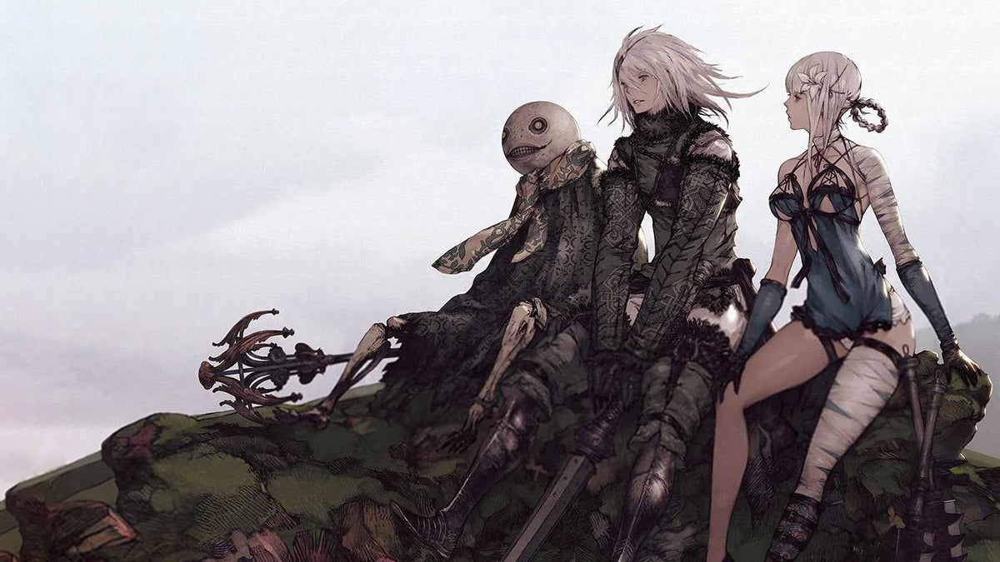

Nier Replicant 1.2 Weapon Tracker
In order to get the newly added Ending E, you have to collect every weapon in the game. Here's a guide to help keep track of them.
First Half of Game
Nirvana Dagger: Lost Shrine, in a box on the second floor after climbing a ladder
Moonrise: Rewarded after helping a guard outside of Seafront fight shades
Blade of Treachery: Emil’s Mansion, before the final boss fight.
Faith: Free all the villagers in the Forest of Myth, or briefly purchasable at the Aerie blacksmith in the second half